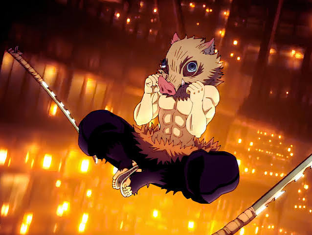
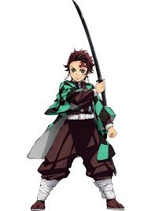
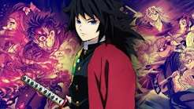
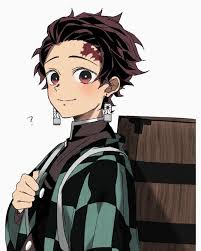
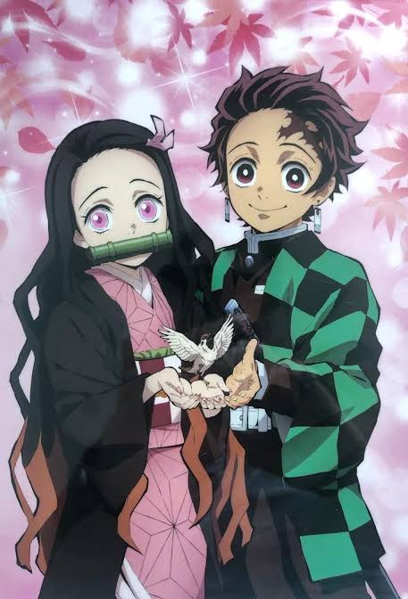

BreackPoint: > 1280px
(Resolution: Desktop)
BreackPoint: < 1280px > 800px
(Resolition: Table)
BreackPoint: < 800px
(Resolution: Mobile)

Inosuke

Tanjiro
Rengoku

Tomioka

Tanjiro Kamado, hermano de Nezuko busca venganza al ver a su familia masacrada por un demonio, convirtiendose en cazador de demonios en busca de una cura para su hermana transformada en demonio.

Nezuko, hermana de Tanjiro convertida en demonio despues de ser atacada por uno y sobrevivir, unica demonio en no atacar humanos y protegerlos.